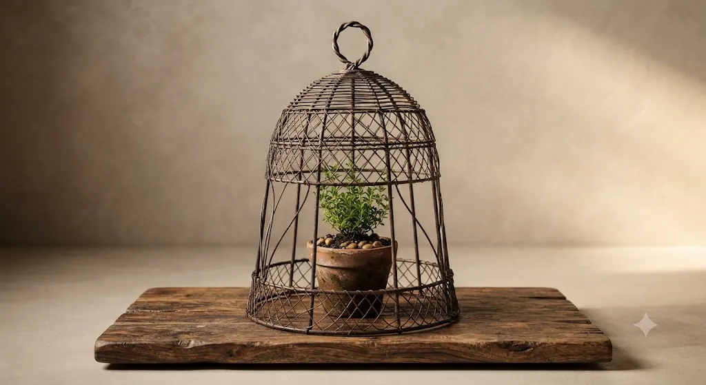

Rustic Iron Wire Plant Cloche / Bell Protector
Masterfully crafted in Jodhpur for high-volume international export, the Rustic Iron Wire Plant Cloche / Bell Protector reflects French Potager sensibilities engineered for retail success at Terrain, Williams-Sonoma. Features Decorative woven wire bell with top finial loop to protect seedlings and style cloches. Constructed exclusively from certified sustainable timber kiln-dried to strict 8–10% moisture equilibrium to prevent warping across diverse North American and European climates. Accompanied by electrostatically coated, corrosion-resistant ironwork with seamless hand-welded joins. Every piece is individually wrapped, buffered with high-density EPS edge guards, and boxed in an ISTA-1A drop-tested 5-ply export master carton (unit volume: 0.025 CBM). Fully compliant with the US Lacey Act, VRIKSH timber legality verification, and EUDR deforestation due diligence regulations.
| Material & construction | Decorative woven wire bell with top finial loop to protect seedlings and style cloches |
|---|---|
| Dimensions | Dia 12" x 18" H / Dia 30 x 46 cm |
| Carton volume | 0.025 CBM / unit |
| Minimum order | 50 Pcs |
| Lead time | 45–60 Days (FOB Mundra) |
| Western retail benchmark | $48 – $65 |
| Style | French Potager |
| Indicative HS heading | 4420.90 — Wooden boxes, cases & ornaments |
| Typical buyers | Terrain, Williams-Sonoma |
Indicative HS heading only — your customs broker confirms final classification. Kiln-dried 8–10% moisture, ISPM-15 dunnage, VRIKSH / Lacey / EUDR paperwork on request.